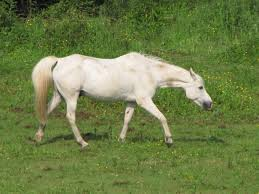
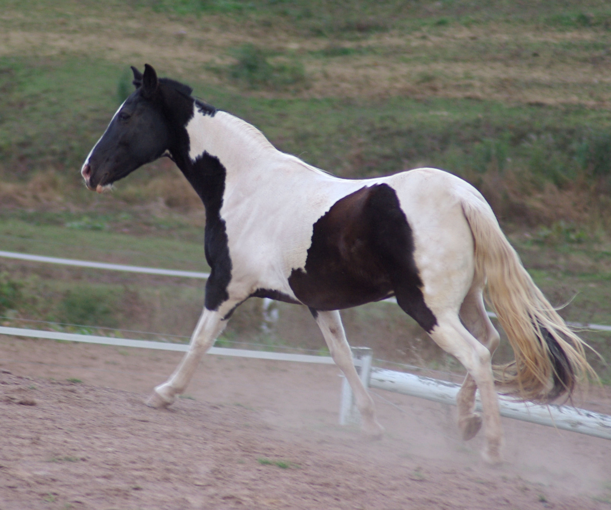
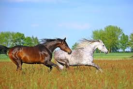

Every single bred has a unique gaits. Every signle gait has a pattern of footfalls. These are only the standard gaits for horses. Horses have four different gaits of horses. The last and the fastest gate is galloping. When a horse gallops, you can often times fell it streght out. The horses movemtents become very smooth. Here are some examples.
The first gait is walking. This is how their feet move when they walk.
The second gat is trotting. When the horse goes to this gait, they are going faster then walking, and it might be a little bit bummpy.
The third gate is cantering. When a horse canters, most times the horses gate smooths out.
This is for a left lead canter.
This is for a right lead canter.
This is for a left lead galloping.
This is for a right lead galloping.
This when a horse is walking.

I got this image from Public Domain Pictures.
A horse trotting.

I got this image from Wikimedia Commons.
A horse cantering.

I got this image from Wikimedia Commons.
Horses galloping.

I got this image from PickPik.